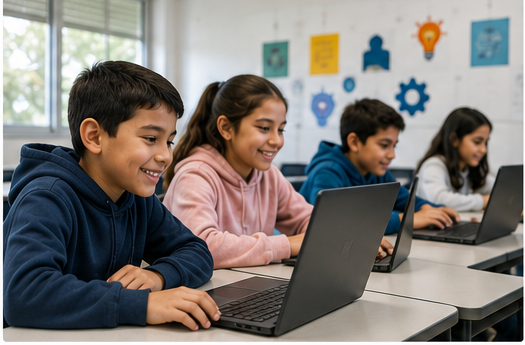
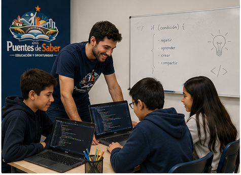
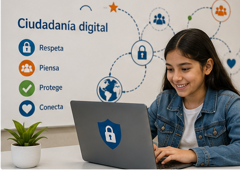

Nuestros Programas
Conocé las iniciativas que llevamos adelante para reducir la brecha digital

Alfabetización Digital Básica
Enseñanza de fundamentos informáticos: uso de computadoras, navegación en internet, procesadores de texto, hojas de cálculo y herramientas de presentación. Dirigido a niños y jóvenes de 8 a 16 años sin experiencia previa.
Las clases se desarrollan de manera práctica y participativa, utilizando computadoras del espacio comunitario y recursos digitales interactivos. Se trabaja en grupos reducidos para garantizar el acompañamiento personalizado de cada participante.
Contenidos:
- ✓Uso básico de PC y sistema operativo
- ✓Navegación segura en internet
- ✓Microsoft Word / Google Docs
- ✓Introducción a Excel / hojas de cálculo

Talleres de Programación
Introducción a la programación mediante plataformas visuales como Scratch y Code.org, y lenguajes como Python. Se trabaja lógica computacional y resolución de problemas. Para jóvenes de 12 a 18 años.
Se aplican metodologías de aprendizaje basadas en proyectos, donde los participantes desarrollan juegos, animaciones y pequeños programas. Se fomenta el pensamiento crítico, la creatividad y el trabajo en equipo.
Contenidos:
- ✓Scratch y Code.org (nivel inicial)
- ✓Python básico
- ✓Lógica y algoritmos
- ✓Creación de proyectos propios

Ciudadanía Digital Responsable
Talleres sobre uso responsable de internet, redes sociales, privacidad, noticias falsas, ciberbullying y Huella Digital. Incluye sesiones con familias.
Se promueve el uso consciente y responsable de la tecnología a través de actividades dinámicas, debates y casos reales. También se brindan herramientas para que padres y tutores puedan acompañar a los jóvenes en el entorno digital.
Contenidos:
- ✓Seguridad y privacidad online
- ✓Detección de fake news
- ✓Prevención del ciberbullying
- ✓Uso saludable de redes sociales